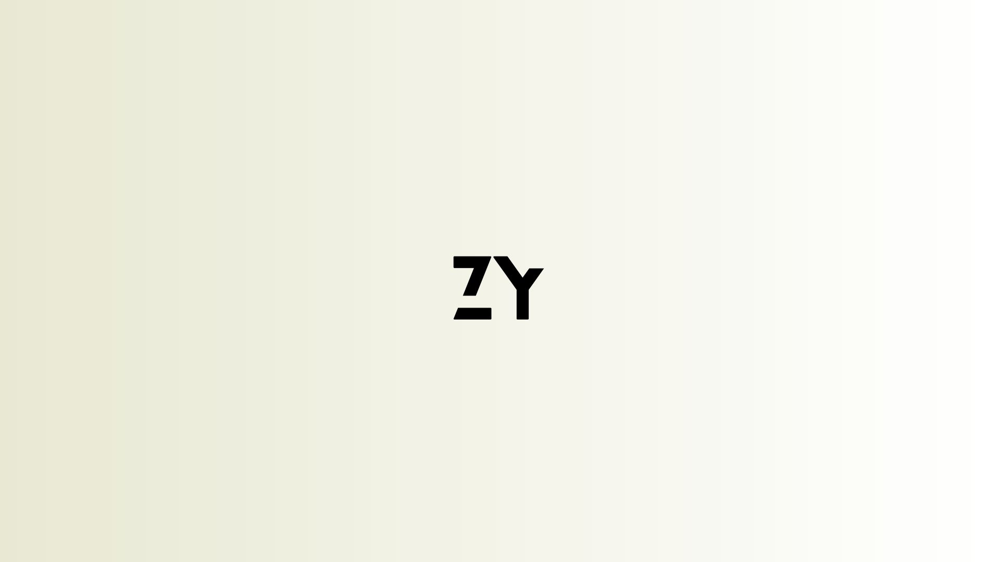
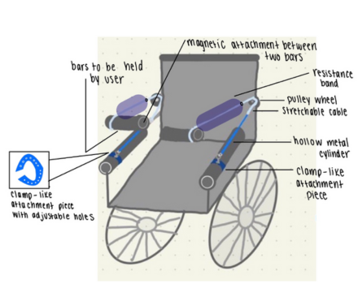
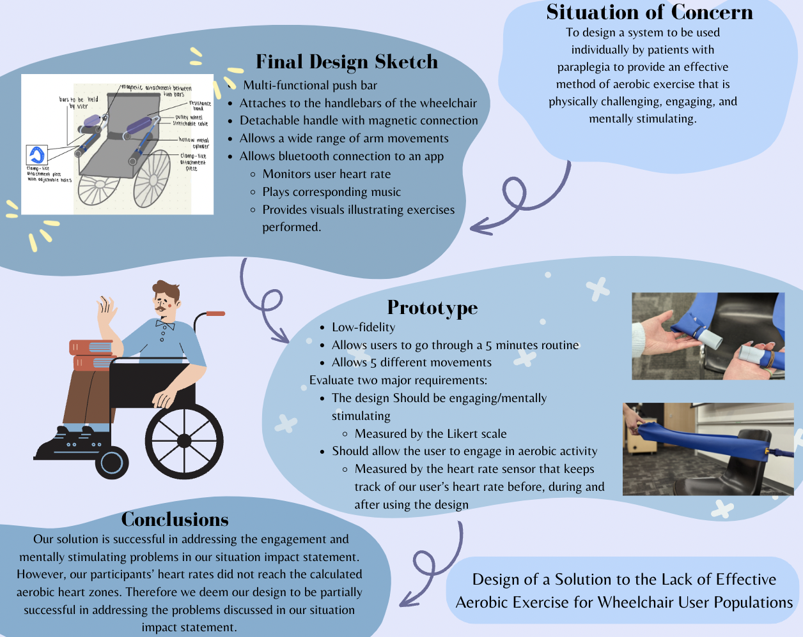

Accessible Design · Prototyping
Exercise Equipment Prototyping
An accessible exercise equipment prototype created to support aerobic upper-body movement for paraplegic patients.

Individual Project
Fall 2022
Team Member
Engineering Design · Prototyping
About the Project
Currently, there are limited exercise options for paraplegic patients. The options that do exist can be expensive or difficult to access. This project focused on creating an alternative exercise option that offers an appropriate amount of aerobic exercise while remaining accessible and cost-efficient.
My Role
User Research
My team and I collected data through stakeholder interviews to understand constraints users face when exercising. We narrowed the exercise movement to aerobic upper-body arm movements.
Design Testing
Volunteers from the Biomedical Engineering program tested the product and completed a short survey. Feedback helped us identify improvement opportunities, including the need for better handle flexibility.
Final Prototyping
I started with a sketch of our product and added features generated from user feedback. My team then gathered materials and identified substitutes for different features of the prototype.

Final Design Summary
For the final product, my team created a push bar that allows five movements with adjustable handles. The product also does not require significant resources, helping maintain affordability.

My Experience
This project was meaningful because it was the first time I fully prototyped a product. I enjoyed the solution design and user testing process, especially improving the design through feedback and iteration.